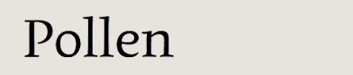
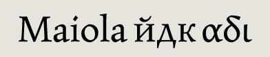

Eduardo Berliner (Brazil) email
Pollen specimen
Bart Blubaugh (USA) email
Owyhee/Cora specimen
published by TypeTogether

Veronika Burian (Czechia/Germany) email
web
Maiola specimen
published by FontFont
Thanks!
We are all very grateful to a lot of people who helped to make this extraordinary year possible.
We would like to thank the tutors and staff of the Department of Typography & Graphic Communication, University of Reading, especially Martin Andrews, Gerry Leonidas, James Mosley, Fiona Ross, Michael Twyman, and Gerard Unger.
We couldn’t have done it without all our families and friends, either!
Typeface designs © the respective authors, 2000–2010.
Website design and production © David Březina, 2007–2010.
The typeface used in the headline is Ronnia by TypeTogether.
Last update: 7 September 2010 — RSS feed